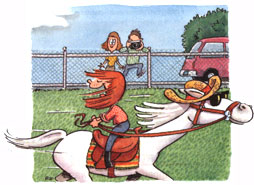

Last Laugh
When a young girl has to have a pony, she can move worlds to get one.
Carrying a bucket of oats in one hand, I whistle down our small pasture. His ghost-white head snaps up: Oats? He spits out the grass. I'm only twenty feet from the fence now, and the pony is well over a hundred feet off, but Silver will reach the gate first, crossing the pasture at a fast run: big as a cow, not so fleet as a deer, white as a sawed-off unicorn, and a wide pink tongue darting out from his old-man's mouth. He stands at the fence, waiting for me, and makes rumbling noises through his nose.
I never thought that small equines had personalities. But I wasn't raised around horses, unless you count television, and those horses were trained to do everything but card tricks. To me, a pony was a particularly vicious species of horse: mean, neurotic, and hard to ride as a kangaroo. A pony was something that wanted you off, and, if possible, to kick you in the head. The one I rode (and flew) at my uncle's farm cured me of horses for thirty years.
Our daughter Serenity knows more about them. At ten years old, she can ride Silver at a full gallop while sitting backward in the saddle. Seen from the highway, it makes the tourists slow their cars, especially if Silver is wearing his old straw hat with ear holes. If he has his sunglasses on (we warned Ren about the ozone hole, so she took steps), they'll park and get out with the camera.
Serenity was only five when she first asked if she could have a pony. We had bartered eggs for riding lessons from a local lady, who explained the facts to me: "Little girls either have horses in their blood or they don't. But if Ren does-personally I think so-then she'll never stop asking for one:'
But the life of a writer pays little and late; every penny of hard cash is spoken for, long before it arrives. A child-safe horse is not cheap, and visa-versa. We had no pasture land, no barn, and no money for either, let alone bucks for saddles, tack, feed, or vet bills, not to mention a perfectly gentle, practically harmless, downsized horse. One night, we added up the cost. About as much as a yacht, we figured.
Ren never told us that all her friends had ponies, which was largely true. But she offered us the entire contents of her savings account, all $22.07 of it, and promised to do chores until she was an old lady. Is there anything I could do?" she asked.
Short of a miracle, there was nothing we could do. "You might try prayer," I told her, about fifty percent serious.
"Okay," Ren said, one hundred percent in dead earnest. Children can be so intense about the things they want, especially the impossible things.
A few nights later, we got a call from some people we'd met at a community function. Their child had outgrown his pony: an elderly, extremely gentle, snowwhite Welsh-Arabian mix. His father, an expensive champion, had been an excellent jumper of fences. Would we be interested in boarding the pony at our place for the next five years or so? They'd provide saddles and tack and pay half of any vet bills.
I stuttered out that we'd be fascinated.
Tell a child to clean her room, and she will respond with remarkable slowness. Mention homework and you may get a variety of unacceptable responses. But tell your daughter that you are building a barn for her new pony and you will have a tireless and grateful helper. Ren and I built a small barn in just under a month.
But we still had no pasture, and horses need a pasture more than they need a roof over their heads. A few days after the barn was finished, our nearest neighbors called. They'd heard we were getting a pony and wondered if I could help them roof their house in exchange for an acre of land adjoining our property. The impossible was happening and darn quick too.
Silver arrived in a little trailer, and we led him to his paddock. He sniffed the grass, the fence posts, the floor, and Serenity and found everything acceptable.
People who know horses tell me that they've never seen a pony as mellow as this one. He's not head-shy, which means you can pet him like a dog. He comes running when Ren whistles and nuzzles her pockets looking for treats. Joy and I just smile.
At a garage sale, we found an antique framed epigram of the kind that used to hang in parlors and general stores. The price was one dollar, so now it hangs by our door. On a black background is a bouquet of seven roses, the seventh in bud and about to bloom, beside a motto in Gothic gold letters: "In God We Trust:' In my youth, I always thought this was a rather dangerous sentiment; but as I get older, it makes increasing sense.
|
 |
|
|